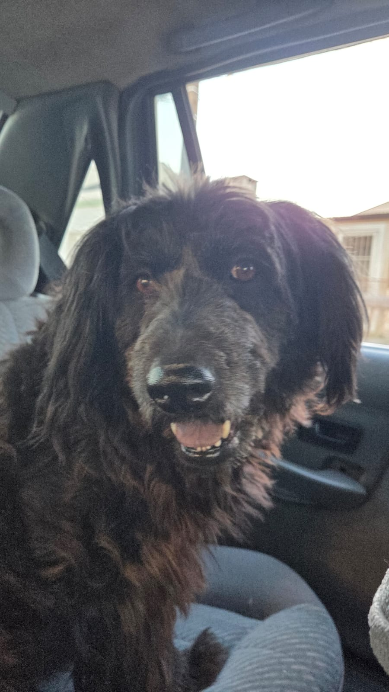
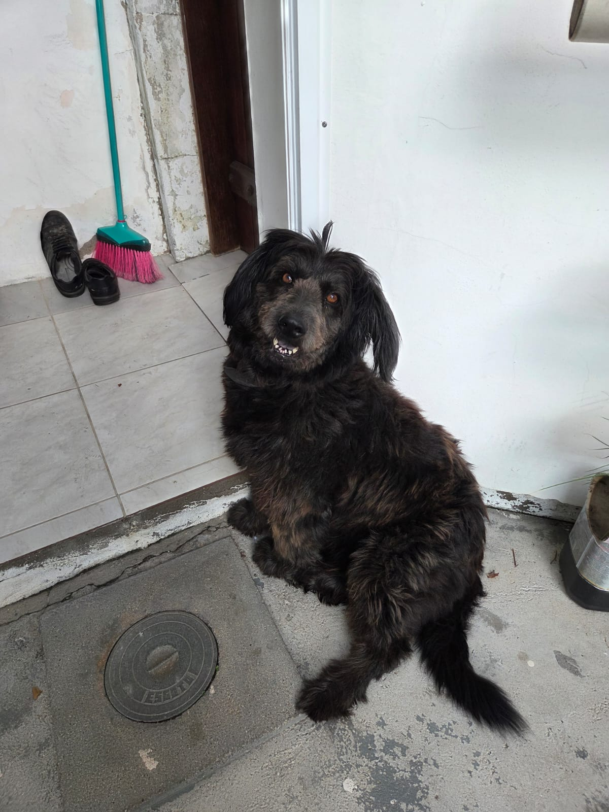
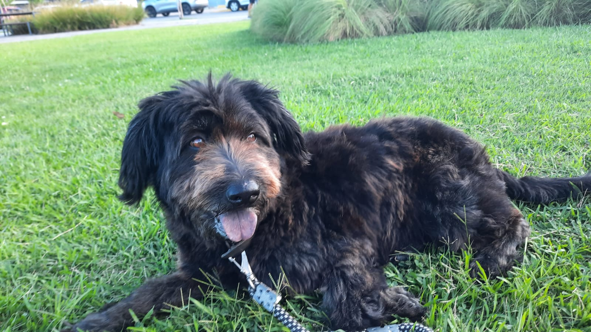
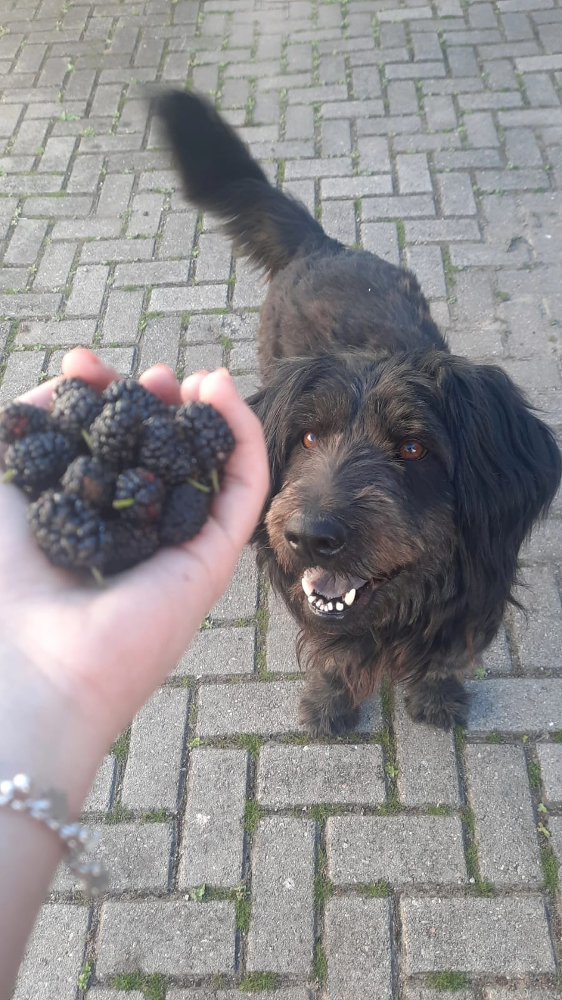
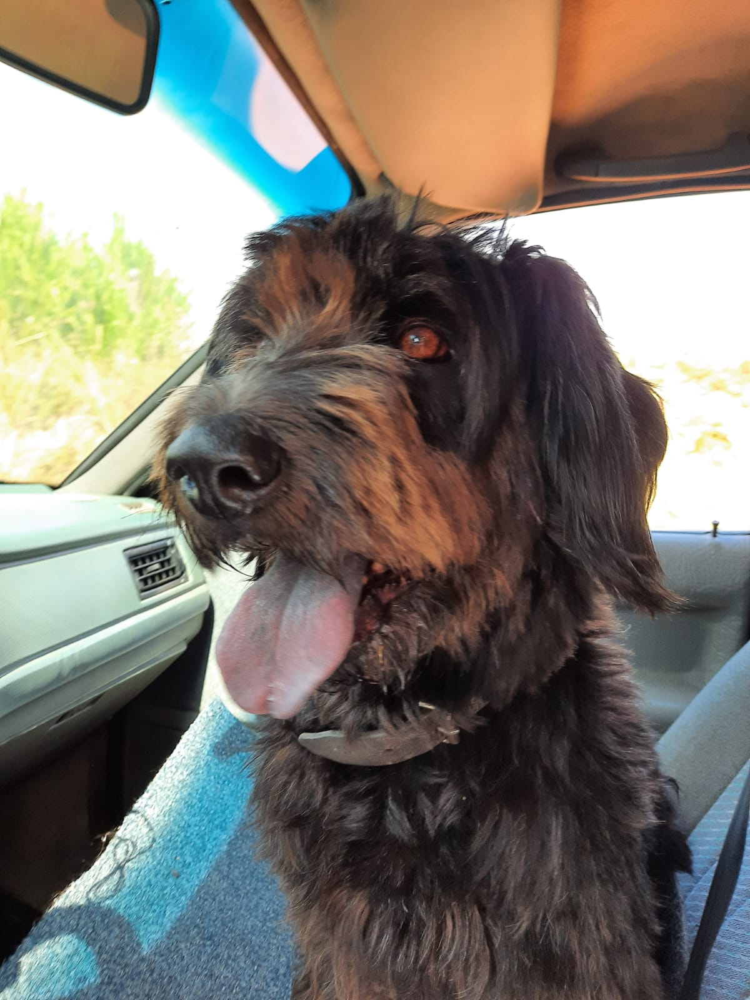
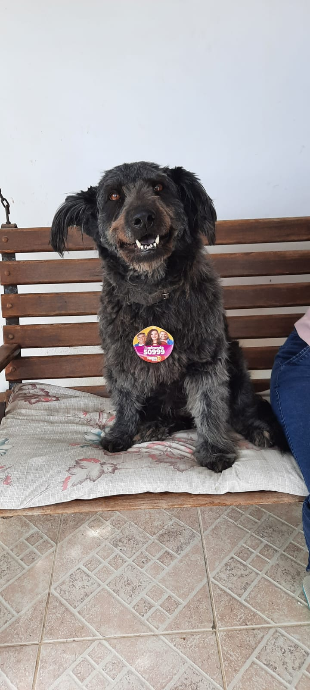

🐾 Deslize para o lado para ver mais fotos (6) 🐾
Almofadinhas
🐕 Cadela🏷️ Tag NFC:
almofadinhas🐾 Sobre
Cachorrinha da Luísa Böhm, muito carinhosa, brincalhona, companheira e cheia de energia. Adora passear e receber carinho de todo mundo!
💉 Vacinas & Cuidados
Polivalente V10 (em dia) Antirrábica (em dia) Vermifugada e castrada
📞 Contato dos cuidadores
Tutora: Luísa Böhm — (53) 96767-6767
📍 Último avistamento
🕒
Disponível na versão com servidor.